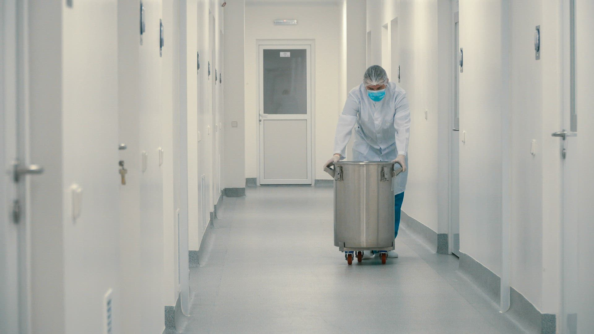

ນັບແຕ່ປີ 2016 ບໍລິສັດ ຊັບທະວີຄູນ ໄດ້ສະໜອງຢາ, ຜະລິດຕະພັນທາງການແພດ, ອຸປະກອນຫ້ອງທົດລອງ ແລະ ນ້ຳຢາກວດພະຍາດ ທີ່ມີຄຸນນະພາບ ໃຫ້ແກ່ສະຖານບໍລິການສາທາລະນະສຸກທົ່ວ ສປປ ລາວ.

ຜະລິດຕະພັນ
ຫ້າຂະແໜງທຸລະກິດ ທີ່ຄອບຄຸມຄວາມຕ້ອງການຂອງໂຮງໝໍ, ຄລີນິກ, ຫ້ອງວິເຄາະ ແລະ ໜ່ວຍງານຮັກສາຄວາມປອດໄພ.
 ອຸປະກອນການແພດCT Scan
ອຸປະກອນການແພດCT Scanເຄື່ອງຖ່າຍພາບຕັດຂວາງດ້ວຍຄອມພິວເຕີ ສຳລັບການວິນິໄສອະໄວຍະວະພາຍໃນ.
ເບິ່ງລາຍລະອຽດ ອຸປະກອນການແພດDigital X-Ray Imaging Machine
ອຸປະກອນການແພດDigital X-Ray Imaging Machineເຄື່ອງຖ່າຍພາບລັງສີລະບົບດິຈິຕອນ ສຳລັບພະແນກລັງສີ.
ເບິ່ງລາຍລະອຽດ ອຸປະກອນການແພດCart-based Ultrasound
ອຸປະກອນການແພດCart-based Ultrasoundເຄື່ອງອັນຕຣາຊາວແບບຕັ້ງພື້ນ ສຳລັບການກວດທົ່ວໄປ ແລະ ສູຕິນາລີເວດ.
ເບິ່ງລາຍລະອຽດ ອຸປະກອນຫ້ອງວິເຄາະHematology Analyzer (CBC)
ອຸປະກອນຫ້ອງວິເຄາະHematology Analyzer (CBC)ເຄື່ອງກວດນັບເມັດເລືອດແບບອັດຕະໂນມັດ.
ເບິ່ງລາຍລະອຽດ ອຸປະກອນຫ້ອງວິເຄາະAuto & Semi-auto Chemistry Analyzer
ອຸປະກອນຫ້ອງວິເຄາະAuto & Semi-auto Chemistry Analyzerເຄື່ອງກວດເລືອດເຄມີ ແບບອັດຕະໂນມັດ ແລະ ເຄິ່ງອັດຕະໂນມັດ.
ເບິ່ງລາຍລະອຽດ ອຸປະກອນຮັກສາຄວາມປອດໄພ100100TDVS-DV X-ray Inspection System
ອຸປະກອນຮັກສາຄວາມປອດໄພ100100TDVS-DV X-ray Inspection Systemລະບົບກວດກາດ້ວຍ X-ray ສຳລັບການກວດສຳພາລະ, ພັດສະດຸ ແລະ ສິນຄ້າ ຢູ່ສະໜາມບິນ, ດ່ານ ແລະ ອາຄານສຳຄັນ.
ເບິ່ງລາຍລະອຽດ ເຄື່ອງໃຊ້ສິ້ນເປືອງBlood Collection Tube
ເຄື່ອງໃຊ້ສິ້ນເປືອງBlood Collection Tubeຫຼອດເກັບຕົວຢ່າງເລືອດ ສຳລັບການກວດທາງຫ້ອງວິເຄາະ.
ເບິ່ງລາຍລະອຽດ ອຸປະກອນການແພດFetal & Maternal Monitor
ອຸປະກອນການແພດFetal & Maternal Monitorເຄື່ອງຕິດຕາມການເຕັ້ນຂອງຫົວໃຈລູກໃນທ້ອງ ແລະ ການບີບຕົວຂອງມົດລູກ.
ເບິ່ງລາຍລະອຽດກຸ່ມຜະລິດຕະພັນ
ກຸ່ມຜະລິດຕະພັນທັງໝົດທີ່ບໍລິສັດຈຳໜ່າຍ. ກະລຸນາເລືອກກຸ່ມເພື່ອເບິ່ງລາຍການ.
ໂຊລູຊັນ
ກະລຸນາເລືອກປະເພດສະຖານທີ່ຂອງທ່ານ ເພື່ອພິຈາລະນາອຸປະກອນ ແລະ ບໍລິການທີ່ເໝາະສົມ.

ໂຮງໝໍ
ອຸປະກອນຖ່າຍພາບ, ຫ້ອງຜ່າຕັດ ແລະ ການຕິດຕາມຄົນເຈັບ ພ້ອມເຄື່ອງໃຊ້ສິ້ນເປືອງ ແລະ ການບຳລຸງຮັກສາຕາມກຳນົດ.
ຄລີນິກ
ເຄື່ອງມືກວດວິນິໄສຂະໜາດກະທັດຮັດ, ອັນຕຣາຊາວ ແລະ ECG ສຳລັບການກວດປະຈຳວັນ.
ຫ້ອງວິເຄາະ
ເຄື່ອງວິເຄາະ, ນ້ຳຢາ ແລະ ຊຸດກວດ ທີ່ເຮັດວຽກຮ່ວມກັນ ພ້ອມການສະໜອງນ້ຳຢາຢ່າງຕໍ່ເນື່ອງ.

ຮ້ານຂາຍຢາ
ຢານຳເຂົ້າທີ່ມີຄຸນນະພາບ ໃນກຸ່ມຢາຫຼັກ ພ້ອມເຄື່ອງມືວັດແທກສຸຂະພາບສຳລັບລູກຄ້າ.
ສະໜາມບິນ ແລະ ດ່ານ
ລະບົບກວດກາສຳພາລະ ແລະ ບຸກຄົນ ສຳລັບສະໜາມບິນ, ດ່ານຊາຍແດນ ແລະ ອາຄານສຳຄັນ.
ປະສົບການ ແລະ ຄວາມຊຳນານ ທີ່ທ່ານເຊື່ອໝັ້ນໄດ້
ບໍລິສັດ ຊັບທະວີຄູນ ຈຳກັດຜູ້ດຽວ ໄດ້ຈົດທະບຽນເປັນບໍລິສັດທີ່ຖືກຕ້ອງຕາມກົດໝາຍຂອງ ສປປ ລາວ ໃນວັນທີ 01/07/2016. ພວກເຮົາດຳເນີນທຸລະກິດດ້ານການສະໜອງ ແລະ ຈຳໜ່າຍຢາ, ຜະລິດຕະພັນທາງການແພດ, ອຸປະກອນຫ້ອງທົດລອງ ແລະ ນ້ຳຢາກວດພະຍາດທຸກຊະນິດ ທີ່ມີຄຸນນະພາບດີ, ພ້ອມທັງມີຂະແໜງຮັກສາຄວາມປອດໄພ ທີ່ທັນສະໄໝ ແລະ ໄດ້ມາດຕະຖານສາກົນ.
ພະນັກງານແຕ່ລະພະແນກມີຄວາມຊຳນານຫຼາຍກວ່າ 20 ປີ ໃນການໃຫ້ຂໍ້ມູນແກ່ລູກຄ້າ ແລະ ຍັງມີພະແນກບໍລິການຫຼັງການຂາຍແບບມືອາຊີບ ຄອຍໃຫ້ບໍລິການທ່ານຢ່າງວ່ອງໄວ.

ເປັນຫຍັງຕ້ອງເລືອກ XTK
ເຫດຜົນທີ່ສະຖານບໍລິການສາທາລະນະສຸກເລືອກຮ່ວມງານກັບບໍລິສັດ.
ຜະລິດຕະພັນຄຸນນະພາບ
ຄັດເລືອກຜະລິດຕະພັນທີ່ທັນສະໄໝ ແລະ ໄດ້ມາດຕະຖານສາກົນ.
ທີມງານມາກປະສົບການ
ຄວາມຊຳນານຫຼາຍກວ່າ 20 ປີ ໃນແຕ່ລະພະແນກ.
ບໍລິການຫຼັງການຂາຍ
ພະແນກບໍລິການມືອາຊີບ ພ້ອມຕອບສະໜອງຢ່າງວ່ອງໄວ.
ຄົບວົງຈອນ
ຢາ, ອຸປະກອນ, ນ້ຳຢາ ແລະ ເຄື່ອງໃຊ້ສິ້ນເປືອງ ຈາກຜູ້ສະໜອງດຽວ.
ຄຳໝັ້ນສັນຍາດ້ານຄຸນນະພາບ
ບໍລິສັດຖືຄຸນນະພາບຂອງຜະລິດຕະພັນ ແລະ ການບໍລິການ ເປັນຄວາມຮັບຜິດຊອບຕໍ່ຄົນເຈັບ ແລະ ບຸກຄະລາກອນການແພດ.
ການຄັດເລືອກຜະລິດຕະພັນ
ຄັດເລືອກຜະລິດຕະພັນທີ່ທັນສະໄໝ ແລະ ໄດ້ມາດຕະຖານສາກົນ ພ້ອມເອກະສານຈາກຜູ້ຜະລິດ.
ການຕິດຕັ້ງ ແລະ ການຝຶກອົບຮົມ
ອຸປະກອນຖືກຕິດຕັ້ງ ແລະ ທົດສອບໂດຍຊ່າງຂອງບໍລິສັດ ພ້ອມການຝຶກອົບຮົມຜູ້ໃຊ້ງານກ່ອນສົ່ງມອບ.
ການສະໜັບສະໜູນຢ່າງຕໍ່ເນື່ອງ
ສະໜອງນ້ຳຢາ, ເຄື່ອງໃຊ້ສິ້ນເປືອງ, ອາໄຫຼ່ ແລະ ການບຳລຸງຮັກສາ ຕະຫຼອດໄລຍະການໃຊ້ງານ.
ບໍລິການຫຼັງການຂາຍ
ຊ່າງ ແລະ ວິຊາການທີ່ມີປະສົບການສູງ ດູແລອຸປະກອນຂອງທ່ານຕະຫຼອດອາຍຸການໃຊ້ງານ.
ຕິດຕັ້ງ ແລະ ທົດສອບລະບົບ
ສຳຫຼວດສະຖານທີ່, ຕິດຕັ້ງ ແລະ ທົດສອບຈົນພ້ອມໃຊ້ງານ.
ສ້ອມແປງ ແລະ ບຳລຸງຮັກສາ
ບຳລຸງຮັກສາຕາມກຳນົດ ແລະ ສ້ອມແປງເມື່ອມີບັນຫາ.
ຝຶກອົບຮົມຜູ້ໃຊ້ງານ
ຝຶກອົບຮົມການໃຊ້ງານ ແລະ ການດູແລເບື້ອງຕົ້ນ ໃຫ້ແກ່ບຸກຄະລາກອນ.
ອາໄຫຼ່ ແລະ ນ້ຳຢາ
ສະໜອງອາໄຫຼ່, ນ້ຳຢາ ແລະ ເຄື່ອງໃຊ້ສິ້ນເປືອງ ຢ່າງຕໍ່ເນື່ອງ.
ຂັ້ນຕອນການໃຫ້ບໍລິການ
ຂັ້ນຕອນການເຮັດວຽກຮ່ວມກັບບໍລິສັດ ຕັ້ງແຕ່ການສອບຖາມ ຈົນເຖິງການດູແລຫຼັງການຂາຍ.
ແຈ້ງຄວາມຕ້ອງການ
ຕິດຕໍ່ຜ່ານສາຍດ່ວນ, WhatsApp ຫຼື ແບບຟອມອອນລາຍ.
ປະເມີນ ແລະ ສະເໜີລາຄາ
ທີມງານກວດສອບ ແລະ ສົ່ງໃບສະເໜີລາຄາໃຫ້ທ່ານ.
ຕິດຕັ້ງ ແລະ ຝຶກອົບຮົມ
ຊ່າງເຂົ້າຕິດຕັ້ງ, ທົດສອບ ແລະ ຝຶກອົບຮົມຜູ້ໃຊ້ງານ.
ດູແລຫຼັງການຂາຍ
ບຳລຸງຮັກສາ ແລະ ຊ່ວຍເຫຼືອດ້ານເຕັກນິກຢ່າງຕໍ່ເນື່ອງ.
ຂ່າວສານ
ຜະລິດຕະພັນXTK ເພີ່ມຂະແໜງອຸປະກອນຮັກສາຄວາມປອດໄພເຄື່ອງສະແກນ X-ray, ປະຕູກວດໂລຫະ ແລະ ເຄື່ອງກວດຮ່ອງຮອຍວັດຖຸ ພ້ອມໃຫ້ບໍລິການແລ້ວ.
ອ່ານເພີ່ມເຕີມ ຮັບສະໝັກງານເປີດຮັບສະໝັກພະນັກງານຂາຍ ເຄື່ອງມືການແພດ ແລະ ນ້ຳຢາເຄມີ
ຮັບສະໝັກງານເປີດຮັບສະໝັກພະນັກງານຂາຍ ເຄື່ອງມືການແພດ ແລະ ນ້ຳຢາເຄມີຮັບຜູ້ມີປະສົບການ 5 ຕຳແໜ່ງ. ສະໝັກໄດ້ທາງອອນລາຍ.
ອ່ານເພີ່ມເຕີມ ຜະລິດຕະພັນປັບປຸງລາຍການອຸປະກອນຫ້ອງວິເຄາະ ແລະ ເຄື່ອງໃຊ້ສິ້ນເປືອງ
ຜະລິດຕະພັນປັບປຸງລາຍການອຸປະກອນຫ້ອງວິເຄາະ ແລະ ເຄື່ອງໃຊ້ສິ້ນເປືອງເພີ່ມເຄື່ອງວິເຄາະ, ນ້ຳຢາ, ຊຸດກວດໄວ ແລະ ເຈ້ຍພິມທາງການແພດ.
ອ່ານເພີ່ມເຕີມສຳນັກງານຂອງບໍລິສັດ
ບໍລິສັດ ຊັບທະວີຄູນ ຈຳກັດຜູ້ດຽວ
- ບ້ານ ດອນແດງ, ເຮືອນເລກທີ 470, ໜ່ວຍ 46, ເມືອງ ຈັນທະບູລີ, ນະຄອນຫຼວງວຽງຈັນ, ຕູ້ ປ.ນ. 1030, ສປປ ລາວ
- ໂທ: (856-21) 563121
ມືຖື: 020 5589 2929
ແຟັກ: (856-21) 562949
ຕ້ອງການໃບສະເໜີລາຄາ ຫຼື ຄຳປຶກສາຈາກບໍລິສັດ?
ກະລຸນາແຈ້ງຄວາມຕ້ອງການຂອງທ່ານ ທີມງານຂອງບໍລິສັດຈະຕິດຕໍ່ກັບຫາທ່ານໂດຍໄວ.